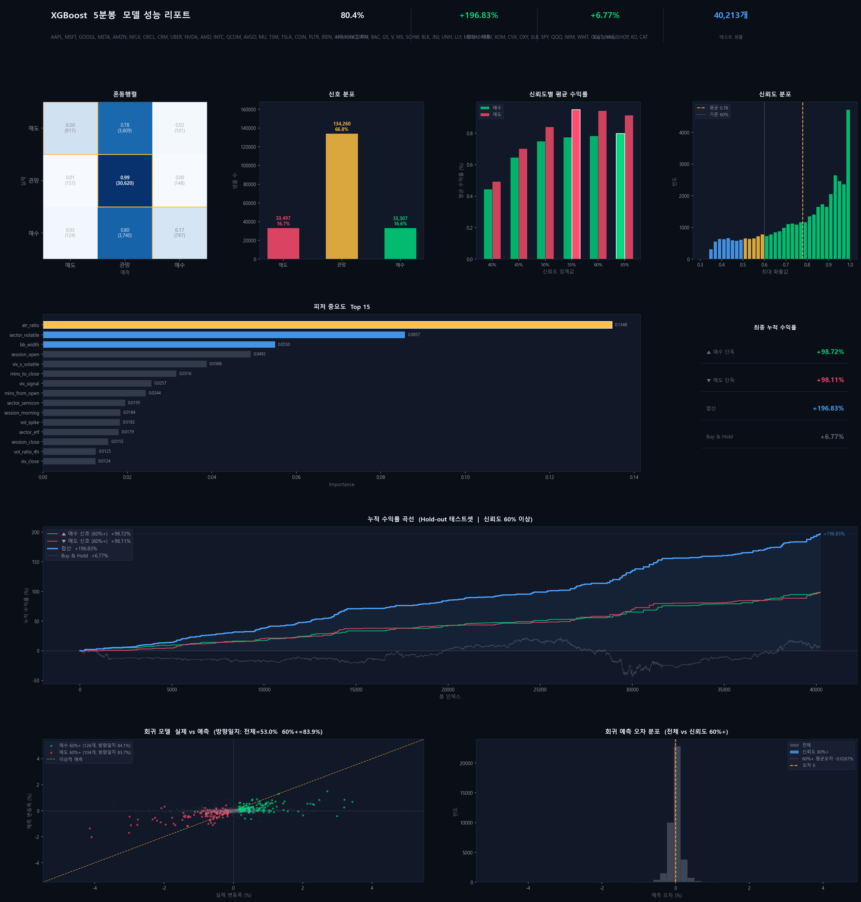

기존 차트 분석 툴이 제공하지 못하는 패턴 기반 예측을 직접 만들어보고자 시작한 프로젝트.
지표 해석의 주관성을 제거하고, 누구나 일관된 매매 판단을 내릴 수 있도록 설계합니다.
같은 차트를 보고도 사람마다 다른 결론을 도출합니다. 지표 해석에 객관적 기준이 없어 매매 판단이 일관되지 않습니다.
5분봉 기준 하루 78봉 × 여러 지표를 동시에 해석해야 하며, 피로도·심리 상태에 따라 판단 기준이 달라져 일관성이 무너집니다.
미국 주식 단기 트레이딩에 관심 있는 개인 투자자. 기술적 분석을 알고 있지만 실시간 판단이 어려운 입문~중급자를 타겟으로 합니다.
기존 방식과 이 앱 사용 후의 흐름을 나란히 비교합니다. 각 단계에서 사용자가 느끼는 감정 변화에 주목했습니다.
국내 MTS/HTS 기반 개인 투자자 증가세 지속 · AI 및 ML 기반 트레이딩 보조 도구 수요 증가 · 기존 도구 대부분이 전문가 대상 또는 고비용 SaaS 형태
| 서비스 | 강점 | 약점 |
|---|---|---|
| TradingView | 풍부한 지표 및 커뮤니티 | 예측 기능 없음, 유료 |
| StockCharts | 기술적 분석 특화 | ML 예측 없음, 영어 전용 |
| Kavout / Alpaca | ML 기반 신호 제공 | 고비용, API 진입장벽 높음 |
| 본 제품 | ML 예측 + 근거 텍스트 + 즉시 조회 | 백테스트 데이터 제한적 |
검증 방법 — 피처 중요도 분석 + 단일 지표 대비 정확도 비교
검증 방법 — 임계값(40~65%) 구간별 정확도 및 신호 수 측정
검증 방법 — 단일 종목 학습 vs 범용 모델 Hold-out 정확도 비교
종목 코드 입력 (ex. AAPL, NVDA)
yfinance API, 최근 5일치 장중 데이터
캔들 패턴 / MA / VWAP / RSI / MACD / ATR / 지지저항선 등
학습된 범용 모델로 다음 봉 방향성 추론 · 회귀 모델로 예상 변동폭 및 종가 추가 출력
상승 / 하락 / 횡보 3분류
예측 확신도 % 수치화
상승·하락·횡보 각각의 확률 바 차트
회귀 모델 기반 다음 봉 예상 변동폭 및 종가
MA20·VWAP 오버레이 + 예상 종가 수평선
RSI·VWAP·MACD 기반 자연어 해설 자동 생성
| 기능 | 설명 | 우선순위 |
|---|---|---|
| 즉시 예측 | 티커 입력 시 5초 내 결과 반환 | P0 |
| 확률 시각화 | 상승/하락/횡보 확률 바 차트 | P0 |
| 예상 종가 | 회귀 모델 기반 다음 봉 예상 변동폭 및 종가 출력 | P0 |
| 분석 근거 | RSI, VWAP, MACD 기반 자동 텍스트 | P1 |
| 캔들차트 | MA20, VWAP 오버레이 + 예상 종가 수평선 | P1 |
| 신호 태그 | 고신뢰 매수 등 3개 이내 요약 태그 | P2 |
| 단계 | 내용 | 상세 |
|---|---|---|
| 1. 데이터 수집 | 5분봉 수집 | yfinance API, 종목별 60일치 장중 데이터 |
| 2. 피처 생성 | 90+ 피처 자동 생성 | 캔들 / MA / VWAP / RSI / MACD / ATR / 지지저항 / 거시지표 / 섹터더미 / 상호작용 피처 |
| 3. 레이블 생성 | 다음 봉 수익률 기준 3분류 | BULLISH / NEUTRAL / BEARISH (임계값 ±0.15%) |
| 4. 모델 학습 | XGBoost + 1D CNN 앙상블 | Optuna 100회 튜닝 + TimeSeriesSplit 5-fold + 앙상블 가중치 최적화 |
| 5. 회귀 모델 | 변동폭 예측 | XGBRegressor로 다음 봉 예상 변동폭 및 종가 추가 출력 |
| 결정 | 이유 |
|---|---|
| TimeSeriesSplit 교차검증 | 일반 KFold 사용 시 미래 데이터 누출 방지 |
| Confidence Threshold 도입 | 낮은 확신 신호 필터링 → 신뢰성 높은 신호만 노출 |
| 다종목 통합 학습 (47개 종목) | 종목별 데이터 부족 문제 해결, 패턴 일반화 |
| XGBoost + 1D CNN 앙상블 | 피처 기반 규칙(XGBoost) + 시계열 패턴(CNN) 상호 보완 |
| Optuna 목적함수 균형 패널티 | 매수/매도 신호 균형 강제 → 편향 방지 |
슬리피지·과적합 감안 50% 할인 적용 — 증권사 API 자동매매 시 백테스트 수치에 가까워질 수 있음
| Confidence 임계값 | 매수 신호 수 | 방향 정확도 | 평균 수익률 |
|---|---|---|---|
| 40% 이상 | 다수 | +0.47% | |
| 50% 이상 | 중간 | +0.62% | |
| 60% 이상 | 소수 (고신뢰) | +0.67% |
임계값을 높일수록 신호 수는 감소하나 정확도 향상 — H2 가설 검증 완료

Yahoo Finance 60일 한계 → Polygon.io 연동으로 2년+ 데이터 확보. 의미있는 MDD·샤프비율 계산 가능
신뢰도 60%+ 신호 발생 시 브라우저 푸시 · 슬랙 · 카카오 알림 자동 전송
단일 조회 페이지에서 47개 종목 신호를 한눈에 비교하는 스크리너 형태로 개편
현재 XGBoost + CNN 구조에 LSTM(장중 시간 흐름 기억)과 Transformer(봉별 중요도 가중치)를 추가해 4중 앙상블로 예측 정확도 향상 도전
5분봉(단타) 외 일봉 기반 모델 추가로 "내일 오를 종목" 서비스 확장. 분기별 리밸런싱 ETF 전략 연계
신호 발생 후 실제 결과 추적 → 모델 재학습 루프 구성. 적중률 실시간 업데이트
Alpaca API 연동으로 신뢰도 60%+ 신호 자동 진입/청산. 슬리피지 최소화로 백테스트 수익률 재현
장중 추세 흐름을 기억하는 LSTM 레이어 추가로 XGBoost + CNN + LSTM 3중 앙상블 구성